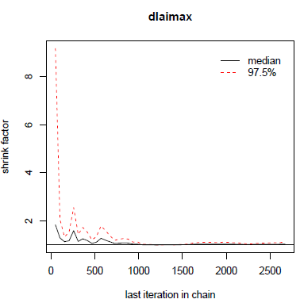
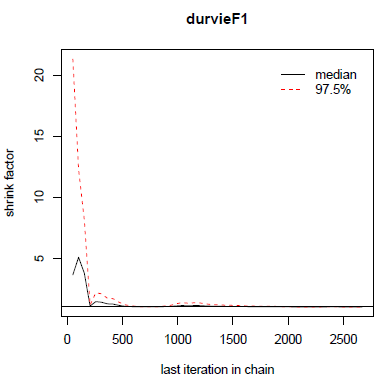
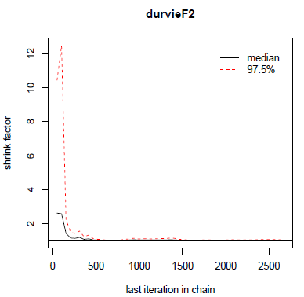
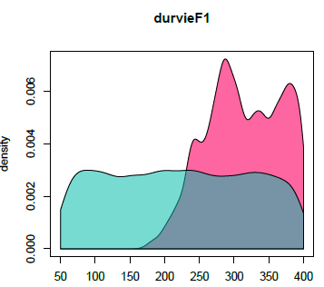
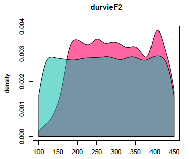
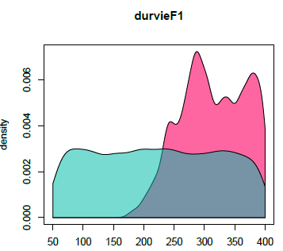
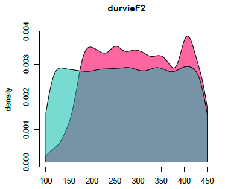
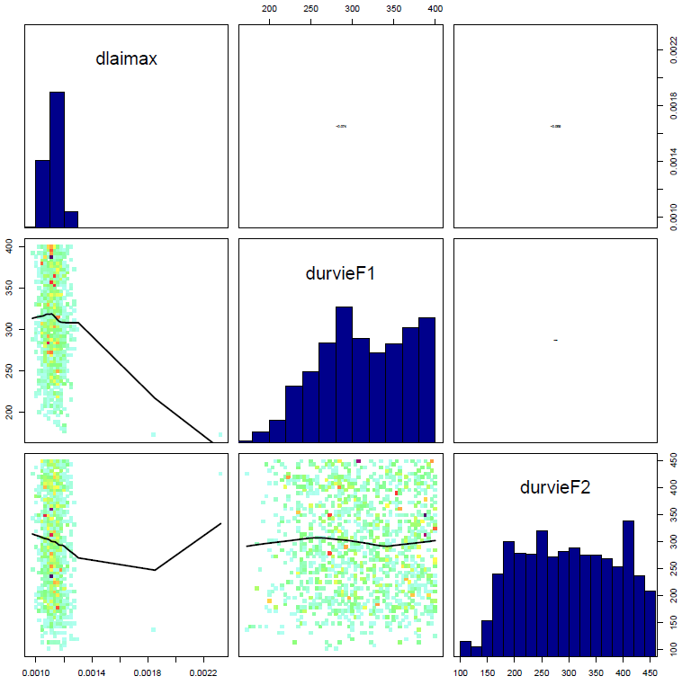

Parameter estimation with the DREAM-zs algorithm
Samuel Buis
2026-02-04
Source:vignettes/Parameter_estimation_DREAM.Rmd
Parameter_estimation_DREAM.RmdIntroduction
This document presents an example of use of the DREAM-zs algorithm on a complex crop model.
Study Case
This example uses the STICS crop model. However, CroptimizR can be applied to any crop model, provided that a suitable wrapper is available. Guidelines and examples for implementing wrappers are provided in the Designing a model wrapper vignette.
The study case is the same as the specific and varietal parameters estimation presented in this vignette.
Initialisation step
This part is not shown here, it is the same as this of the introductory example.
Read and select the corresponding observations
This part is not shown here, it is the same as this of the specific and varietal parameters estimation vignette.
Set information on the parameters to estimate
param_info <- list()
param_info$dlaimax <-
list(
sit_list = list(
c(
"bou99t3",
"bou00t3",
"bou99t1",
"bou00t1",
"bo96iN+",
"lu96iN+",
"lu96iN6",
"lu97iN+"
)
),
lb = 0.0005,
ub = 0.0025
)
param_info$durvieF <-
list(
sit_list =
list(
c("bo96iN+", "lu96iN+", "lu96iN6", "lu97iN+"),
c("bou99t3", "bou00t3", "bou99t1", "bou00t1")
),
lb = c(50, 100),
ub = c(400, 450)
)Set options for the model
model_options <- stics_wrapper_options(
javastics = javastics_path,
workspace = stics_inputs_path,
parallel = TRUE
)Set options for the DREAM method
The main basic options are set here. The reader can refer to
? DREAMzs (see doc for input argument
settings) for documentation on more advanced ones. Note
that startValue can also be used to provide initial values
for the Markov Chains (in that case, it must be a matrix having as many
lines as desired number of Markov Chains and a number of columns
equivalent to the number of estimated parameters, ordered in the same
way as param_info$lb and param_info$ub).
optim_options <- list()
optim_options$iterations <- 10000 # Total number of iterations
# (=> optim_options$iterations/
# optim_options$startValue
# iterations per chain)
optim_options$startValue <- 3 # Number of markov chains
optim_options$ranseed <- 1234 # seed for random numbersRun the parameter estimation
In this case, the parameter estimation algorithm
(optim_methodargument) and the criterion function
(crit_function argument) must be set in input of
estim_param function.
The list of available criteria for Bayesian methods is given by
? likelihoods
The param_info argument has the same content as in the
specific
and varietal parameters estimation vignette.
For the moment, only uniform distributions of bounds
param_info$lb and param_info$ub can be used.
Other type of distributions will be provided in next
versions.
optim_results <- estim_param(
obs_list = obs_list,
crit_function = likelihood_log_ciidn,
model_function = stics_wrapper,
model_options = model_options,
optim_options = optim_options,
optim_method = "BayesianTools.dreamzs",
param_info = param_info,
out_dir = data_dir # path where to store the results
)The results printed in output on the R console are the following:
## ## # # # # # # # # # # # # # # # # # # # # # # # # #
## ## ## MCMC chain summary ##
## ## # # # # # # # # # # # # # # # # # # # # # # # # #
## ##
## ## # MCMC sampler: DREAMzs
## ## # Nr. Chains: 3
## ## # Iterations per chain: 2669
## ## # Rejection rate: 0.878
## ## # Effective sample size: 423
## ## # Runtime: 54194.02 sec.
## ##
## ## # Parameters
## psf MAP 2.5% median 97.5%
## ## dlaimax 1.045 0.001 0.001 0.001 0.001
## ## durvieF1 1.000 289.864 213.438 311.226 398.462
## ## durvieF2 1.009 208.487 147.158 298.312 443.323
## ##
## ## ## DIC: 442.256
## ## ## Convergence
## ## Gelman Rubin multivariate psrf:
## ##
## ## ## Correlations
## ## dlaimax durvieF1 durvieF2
## ## dlaimax 1.000 -0.074 -0.059
## ## durvieF1 -0.074 1.000 -0.029
## ## durvieF2 -0.059 -0.029 1.000The rejection rate is the rate of rejection of proposed values. According to (Vrugt, 2016), a value between 0.7 and 0.85 is usually indicative of good performance of a MCMC simulation method.
Effective sample size should be here the number of different values per chain for the parameter vector in the posterior sample.
Under section “parameters” are given statistics on the posterior sample. MAP means Maximum A Posteriori. It is the values of the parameters among the posterior sample that lead to the maximal value of the posterior density.
DIC is the Deviance information criterion. It is a commonly applied method to summarize the fit of an MCMC chain. More details about it can be found in the vignette of the BayesianTools package.
The output value of estim_param contains:
-
statistics,quantilesandMAP: statistics on the posterior sample, -
post_sample, a sample of the posterior distribution (excluding the burnin phase), -
out: the list returned by the package BayesianTools.
It is stored with complementary graphs in the out_dir
folder.
Among these graphs, gelmanDiagPlots.pdf plots the evolution of the Gelman diagnostic. According to (Vrugt, 2016) the algorithm is considered to have converged to the posterior distribution when all the values of this diagnostic are inferior to 1.2. In theory the sample of the posterior distribution should thus be taken only after this (WARNING: it is not the case here, neither in BayesianTools, this should be improved).
In this case, we obtain:

Figure 1: Gelman diagnostic.
marginalPlots.pdf shows estimation of the prior (blue) and posterior (pink) densities:
 

Figure 2: Prior and posterior densities.
correlationPlots.pdf gives information about the correlation between parameters:

Figure 3: Correlation plot.
Launch a new estimation starting from previous results
In case one wants to increase the number of iterations, because the
algorithm has not yet converged or the posterior sample is considered to
small, there is a possibility to re-launch the method from the point is
has stopped using the PreviousResults option:
optim_options$PreviousResults <- optim_results$out
optim_options$iterations <- 1000 # Total number of new iterations
optim_results <- estim_param(
obs_list = obs_list,
crit_function = likelihood_log_ciidn,
model_function = stics_wrapper,
model_options = model_options,
optim_options = optim_options,
optim_method = "BayesianTools.dreamzs",
param_info = param_info
)